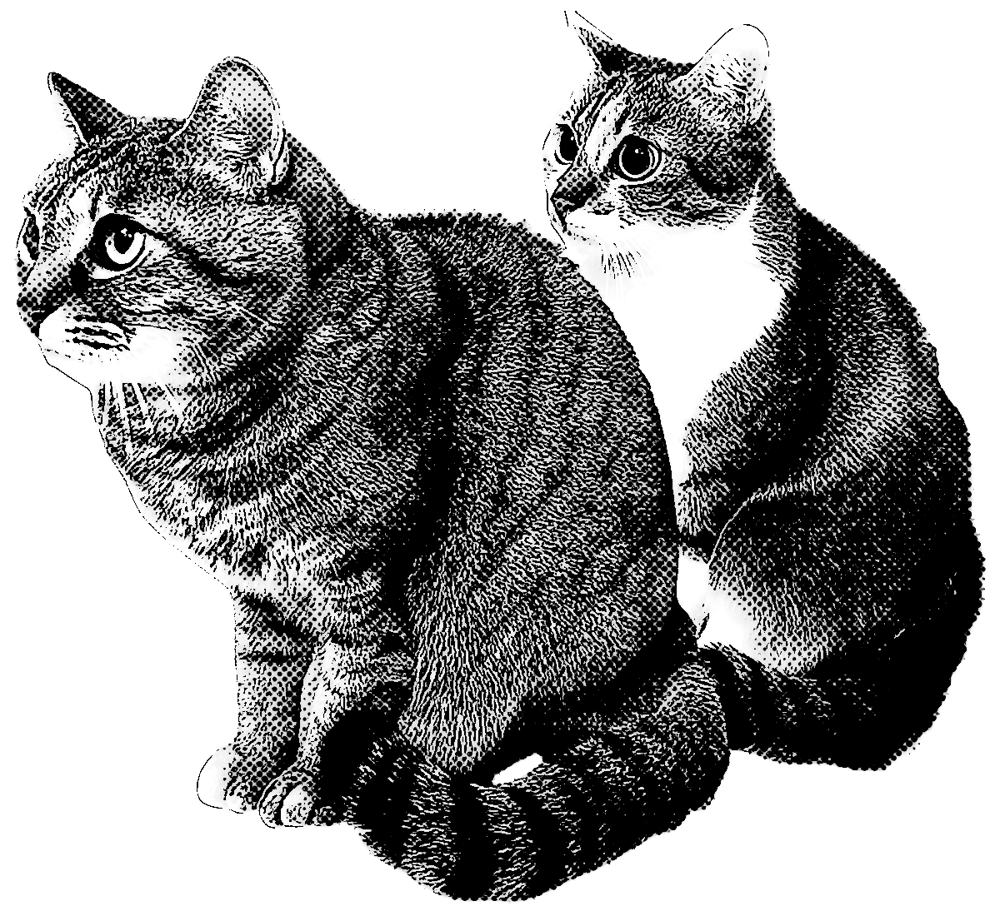

NOBLE ETERNAL KAWAII ONLY /
皆さまはN.E.K.O.をご存知だろうか。
漢字にすると猫。そうご存知動物の猫である。だが今回はあえてアルファベットで表記しよう。するとどうだろう、ある単語が見えてくる…
Noble（気高い）、Eternal（永遠の）、Kawaii（かわいい）、Only（唯一の）………
ぴったりすぎる
今回は我が家の2匹のN.E.K.O.を紹介していく。
ちなみに画面下部の左がキジトラの「ふうちゃん（ちゃんまでが正式名称）」で右が「こむぎ」だ。とてもかわいい。ちなみに2匹の仲はそれほどよくはない。

DYNAMITE BODY…